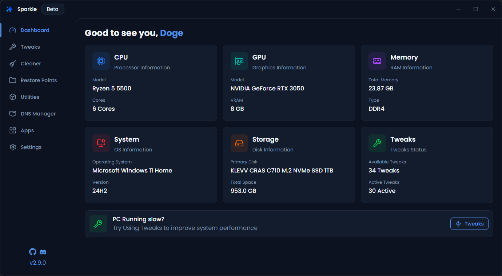

Debloqueia, otimiza e personaliza o teu Windows. Tudo de forma rapida e segura.

Tudo o que precisas para otimizar o teu Windows
40 ajustes de sistema em 7 categorias com toggles reversiveis, presets recomendados e detecao de compatibilidade GPU.
Limpa 6 categorias de ficheiros temporarios com deteccao de tamanho por categoria.
Altera DNS com 5 provedores pre-definidos, DNS personalizado, teste de ping para encontrar o mais rapido e limpeza de cache.
Instala e desinstala 156 apps em 10 categorias com Winget ou Chocolatey.
15 utilitarios incluindo SFC, DISM, Check Disk, reinicio de drivers GPU, reset de rede e mais.
Cria e restaura pontos de restauracao do Windows, reverte ajustes individuais ou todos.
Abre o PowerShell e cola este comando:
Sim. O ChibangaRx e totalmente open source com licenca GPL-V3. Qualquer pessoa pode ver, editar ou compilar o codigo.
Sim, todos os ajustes sao reversiveis. Podes usar o reversor de ajustes ou um ponto de restauracao do sistema.
As permissoes de administrador sao necessarias para aplicar ajustes a nivel do sistema e criar/gerir pontos de restauracao.
O ChibangaRx nao esta assinado digitalmente. Quando executas um exe nao assinado, o Windows assume que e inseguro. Clica em "Mais informacoes" e depois "Executar mesmo assim".